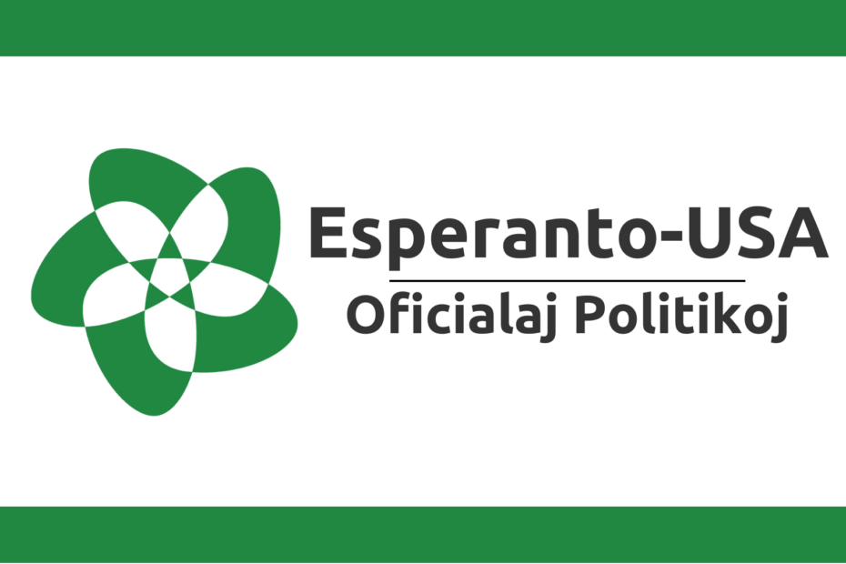
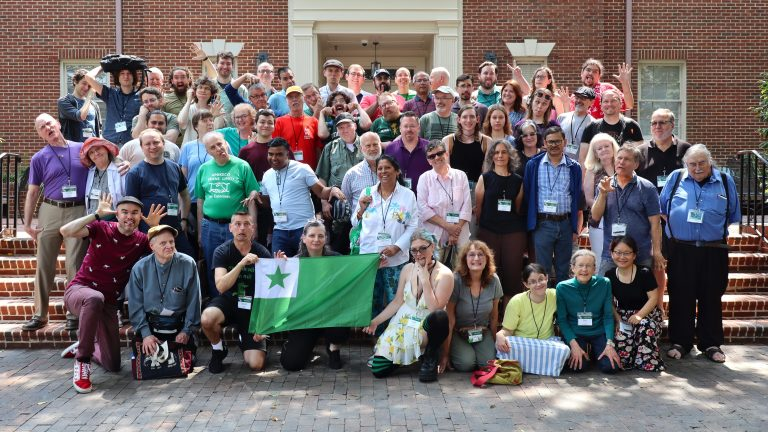

What is Esperanto-USA?
Esperanto-USA is the national nonprofit organization dedicated to promoting Esperanto and supporting its community of speakers and learners throughout the United States.

What does Esperanto-USA strive to do?
Esperanto-USA strives to build a world rooted in understanding, open communication, cultural exchange, and friendship based off usage and principle of Esperanto.
Some words from Esperanto-USA
"Esperanto-USA supports a variety of projects that promote the use of Esperanto, strengthen community, and expand access to educational and cultural opportunities. These initiatives reflect our mission of expanding access to and education about the international language Esperanto. Our projects range from educational programs and publications to grants, events, media initiatives, and community-building efforts. Some are administered directly by Esperanto-USA, while others are supported through partnerships with volunteers, local groups, and affiliated organizations. Whether you are looking to learn Esperanto, connect with other speakers, contribute your skills, or support the growth of the movement, we invite you to explore the projects below and discover how you can get involved." -Esperanto-USA.org
Some projects by Esperanto-USA
Esperanto-USA has many fascinating projects available to starting, beginner, intermediate, and advanced Esperantists. As well as weekly meetings, language classes, and a wide variety of festivals and events. This makes Esperanto-USA an amazing resource, online or offline, for any Esperantist.

Esperanto-USA is, in my opinion, one of the best ways to meet other Esperantists and to find Esperanto-centered events.
Membership information
- a printable copy of the quarterly magazine "American Esperantist"
- access to digital memvership directory
- online store discounts
- board election voting rights
- $100 off confrence registration and summer Esperanto courses
Ways to contact Esperanto-USA
- Email:eusa@esperanto-usa.org
- Phone: +1 (800) ESPERANTO (800-377-3726)
- Address: 2014 Capitol Ave, #100 Sacramento, CA 95811
Physical office address: 1500 Park Ave, Emeryville, CA 94608
Phone: 510-653-0998
Website: Esperanto-USA.org